전산응용건축제도기능사 (2003-10-05 기출문제)
1과목: 건축구조
1. 철근콘크리트 플랫 슬래브의 두께는 얼마 이상으로 하는가?
- 8cm
- 12cm
- 15cm
- 18cm
(정답률: 57%)

2. 기둥 맨 위 처마의 부분에 수평으로 거는 것으로 기둥머리를 고정하여 지붕틀을 받아 기둥에 전달하는 역할을 하는 것은?
- 깔도리
- 층보
- 허리잡이
- 토대
(정답률: 65%)
3. 벽돌조 벽체에서 내쌓기를 할 때 내미는 정도의 한계는?
- 0.5B
- 1.0B
- 1.5B
- 2.0B
(정답률: 70%)
4. 목구조에서 버팀대와 가새에 대한 설명 중 잘못된 것은?
- 가새의 경사는 45°에 가까울수록 유리하다.
- 가새는 하중의 방향에 따라 압축응력과 인장응력이 번갈아 일어난다.
- 버팀대는 가새보다 수평력에 강한 벽체를 구성한다.
- 버팀대는 기둥 단면에 적당한 크기의 것을 쓰고 기둥 따내기도 되도록 적게 한다.
(정답률: 51%)
5. 대린벽으로 구획된 벽돌조 내력벽의 벽길이가 7m일 때 개구부의 폭의 합계는 최대 얼마 이하로 하는가?
- 3m
- 3.5m
- 4m
- 4.5m
(정답률: 85%)
6. 그림 중 꺽인지붕(curb roof)의 평면모양은?
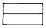
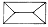
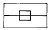
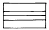
(정답률: 68%)
7. 내민보(cantilever beam)에 대한 설명으로 옳은 것은?
- 연속보의 한 끝이나 지점에 고정된 보의 한 끝이 지지점에서 내밀어 달려 있는 보를 말한다.
- 보의 양단이 벽돌, 블록, 석조벽 등에 단순히 얹혀있는 상태로 된 보를 말한다.
- 단순보와 동일하게 보의 하부에 인장주근을 배치하고 상부에는 압축철근을 배치한다.
- 전단력에 대한 보강의 역할을 하는 늑근은 사용하지 않는다.
(정답률: 59%)
8. 철근콘크리트 구조물에서 기둥의 최소단면적은 얼마 이상이어야 하는가?
- 600㎠
- 500㎠
- 400㎠
- 300㎠
(정답률: 55%)
9. 철골구조에서 보통볼트로 접합시 볼트 구멍은 볼트 직경보다 얼마 이상 크게 해서는 안되는가?
- 0.2mm
- 0.5mm
- 0.9mm
- 1.2mm
(정답률: 58%)
10. 철근콘크리트 기둥의 철근 배근에 대한 설명 중 부적당한 것은?
- 기둥을 보강하는 세로철근, 즉 축방향철근이 주근이다.
- 띠철근이나 나선철근은 주근의 좌굴과 콘크리트가 수평으로 터져나가는 것을 구속한다.
- 주근은 사각형 기둥에서는 6개 이상, 원형, 다각형 기둥에서는 4개 이상을 사용한다.
- 띠철근 간격은 보통 30cm 이하로 한다.
(정답률: 70%)
11. 벽돌조 이중벽(공간벽)쌓기에서 연결재의 배치曺거리 간격의 수직거리는 최대 얼마 이하로 하는가?
- 40cm
- 50cm
- 75cm
- 90cm
(정답률: 28%)
12. 문꼴을 보기 좋게 만드는 동시에 주위벽의 마무림을 잘하기 위하여 둘러대는 누름대를 무엇이라 하는가?
- 문선
- 풍소란
- 가새
- 인방
(정답률: 61%)
13. 반자에 관한 기술 중 옳지 않은 것은?
- 지붕 밑 또는 윗층 바닥 밑을 가리어 장식적, 방온적으로 꾸민 구조부분을 말한다.
- 반자틀은 반자돌림대, 반자틀받이, 달대, 달대받이로 짜 만든다.
- 주택 거실의 반자높이는 2.1m 이상으로 한다.
- 달반자는 바닥판 밑을 제물로 또는 직접 바르는 반자이다.
(정답률: 46%)
14. 철근콘크리트 슬래브의 장변방향 철근의 배근간격은 몇 [cm] 이하로 하는가?
- 10[cm]
- 20[cm]
- 30[cm]
- 40[cm]
(정답률: 40%)
15. 철골구조에서 간사이가 15m를 넘거나, 보의 춤이 1m 이상되는 보를 판보로 하기에는 비경제적일 때 사용하는 것으로 접합판(gusset plate)을 대서 접합한 조립보는?
- 형강보
- 래티스보
- 상자형보
- 트러스보
(정답률: 50%)
16. 그림과 같은 보에 하중이 다음과 같이 작용할 때 가장 올바른 철근 배근은?
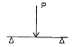
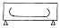
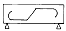
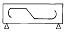
(정답률: 49%)
17. 벤딩모멘트나 전단력을 견디게 하기 위해 보의 단부의 단면을 중앙부의 단면보다 증가시킨 부분은?
- 헌치(haunch)
- 주두(capital)
- 스터럽(stirrup)
- 후프(hoop)
(정답률: 68%)
18. 철근콘크리트 슬래브 두께는 최소 얼마 이상인가?
- 5㎝
- 8㎝
- 10㎝
- 12㎝
(정답률: 38%)
19. 곡면판이 지니는 역학적 특성을 응용한 구조로서 외력은 주로 판의 면내력으로 전달되기 때문에 경량이고 내력이 큰 구조물을 구성할 수 있는 것은?
- 철골구조
- 셸구조
- 현수구조
- 커튼월구조
(정답률: 68%)
20. 지반이 연약하거나 기둥에 작용하는 하중이 커서 기초판이 넓어야 할 때 사용하는 기초로 건물의 하부 전체 또는 지하실 전체를 하나의 기초판으로 구성한 것은?
- 독립기초
- 줄기초
- 복합기초
- 온통기초
(정답률: 80%)
2과목: 건축재료
21. 목재의 성질로 틀린 것은?
- 함수율에 의한 변형이 크다.
- 가공하기 쉽다.
- 불에 타기 쉽다.
- 열전도율이 크다.
(정답률: 80%)
22. 다음 중 석재의 용도로서 적당하지 않은 것은?
- 트래버틴 - 특수실내장식재
- 응회암 - 구조용
- 점판암 - 지붕재
- 대리석 - 장식재
(정답률: 68%)
23. 콘크리트의 배합설계를 효과적으로 진행하기 위해서는 먼저 콘크리트에 요구되는 성능을 정확하게 파악하는 것이 중요한데, 이에 따른 콘크리트가 구비하여야 할 성질로 알맞지 않은 것은?
- 소요의 강도를 얻을 수 있을 것
- 적당한 워커빌리티가 있을 것
- 균일성이 있을 것
- 슬럼프 값이 클것
(정답률: 70%)
24. 이형철근에서 표면에 마디를 만드는 이유로 가장 알맞은 것은?
- 부착강도를 높이기 위해
- 인장강도를 높이기 위해
- 압축강도를 높이기 위해
- 항복점을 높이기 위해
(정답률: 57%)
25. 수화작용시 발열량을 적게 한 시멘트로 조기강도는 적으나 장기강도가 크며 경화수축이 적어 댐 축조나 큰 구조물에 사용하는 시멘트는?
- 보통 포틀랜드시멘트
- 중용열 포틀랜드시멘트
- 조강 포틀랜드시멘트
- 백색 포틀랜드시멘트
(정답률: 67%)
26. 벽돌의 품질시험에서 가장 중요한 것은?
- 압축강도 시험과 휨강도 시험
- 흡수율과 휨강도 시험
- 흡수율과 압축강도 시험
- 압축강도 시험과 전단강도 시험
(정답률: 63%)
27. 철재의 부식방지 방법으로 부적당한 것은?
- 철재의 표면에 아스팔트나 콜-탈(coar-tar) 등을 도포한다.
- 모르터 및 콘크리트 피막을 만든다.
- 도금 또는 법랑마감으로 한다.
- A.E제를 도포한다.
(정답률: 56%)
28. 아스팔트의 품질을 판별하는 내용과 거리가 먼 것은?
- 신도
- 침입도
- 감온비
- 압축강도
(정답률: 45%)
29. 다음 중 안전 유리에 속하지 않는 것은?
- 형판 유리
- 접합 유리
- 강화 판유리
- 배강도 유리
(정답률: 53%)
30. 다음중 열가소성 수지에 속하지 않은 것은?
- 염화비닐 수지
- 멜라민 수지
- 폴리에틸렌 수지
- 아크릴 수지
(정답률: 42%)
31. 화성암의 풍화물, 유기물, 기타 광물질이 땅속에 퇴적되어 지열과 지압의 영향을 받아 응고된 것을 수성암이라하는데, 다음 중 수성암에 해당되지 않는 것은?
- 안산암
- 석회암
- 응회암
- 사암
(정답률: 50%)
32. 골재의 품질에 대한 설명 중 틀린 것은?
- 잔 것과 굵은 것이 골고루 혼합된 것이 좋다.
- 강도는 시멘트 풀의 최대 강도 이상이어야 한다.
- 표면이 매끄럽고, 모양은 편평하거나 가늘고 긴 것이 좋다.
- 내마멸성이 있고, 화재에 견딜 수 있는 성질을 갖추어야 한다.
(정답률: 66%)
33. 보통 재료에서는 축방향에 하중을 가할 경우 그 방향과 수직 횡방향에도 변형이 생기는데, 횡방향의 변형과 축방향의 변형의 비를 무엇이라 하는가?
- 탄성계수
- 경도
- 푸아송비
- 굳기
(정답률: 74%)
34. 다음 중 일반적인 콘크리트의 장점에 대한 설명으로 옳지 않은 것은?
- 인장강도가 크다.
- 철근, 철골 등과 접착성이 우수하다.
- 내화적이다.
- 내수적이다.
(정답률: 61%)
35. 다음 점토제품 중 흡수성이 가장 큰 것은?
- 토기
- 도기
- 석기
- 자기
(정답률: 53%)
36. 표준형 점토 벽돌의 크기는? (단, 단위는 mm)
- 190× 90× 57
- 190× 90× 60
- 210× 100× 57
- 210× 100× 60
(정답률: 80%)
37. 건축구조재료에 요구되는 성질과 가장 거리가 먼 것은?
- 재질이 균일하고 강도가 커야 한다.
- 내화, 내구성이 커야 한다.
- 가공이 쉬워야 한다.
- 외관이 미려해야 한다.
(정답률: 79%)
38. 목재의 접합에서 목재와 목재 사이에 끼워서 전단에 대한 저항 작용을 목적으로 한 철물은?
- 꺽쇠
- 듀벨
- 클램프
- 비계
(정답률: 62%)
39. 다음 중 합성 수지의 일반적인 성질이 아닌 것은?
- 가소성이 크다.
- 전성 및 연성이 크다.
- 무기재료에 비해 내화, 내열성이 부족하다.
- 착색이 자유롭고 투수성이 크다.
(정답률: 37%)
40. 점토에 톱밥이나 분탄 등의 가루를 혼합하여 소성한 것으로 절단, 못치기 등의 가공이 우수한 것은?
- 이형 벽돌
- 다공질 벽돌
- 포도 벽돌
- 규회 벽돌
(정답률: 76%)
3과목: 건축계획 및 제도
41. 도면에는 척도를 기입해야 하는데, 그림의 형태가 치수에 비례하지 않을 경우 표시 방법으로 옳은 것은?
- US
- DS
- NS
- KS
(정답률: 65%)
42. 제도 용구에 관한 설명 중 옳은 것은?
- T자는 단독으로 평행선, 수직선, 사선을 긋는다.
- 선을 그릴 때 T자 머리를 제도판에서 약간 띄운다.
- T자로 수평선을 그을 때는 오른쪽에서 왼쪽으로 긋는다.
- 삼각자 1개 또는 2개를 가지고 여러 가지 위치를 바꾸면 여러 가지 각도의 선을 그을 수 있다.
(정답률: 65%)
43. KS 제도통칙에 의한 A0 용지의 크기에 해당하는 것은?
- 594× 841㎜
- 841× 1189㎜
- 1189× 1090㎜
- 1090× 1200㎜
(정답률: 60%)
44. 아래 그림의 재료명으로 옳은 것은?
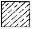
- 석재
- 인조석
- 벽돌
- 목재 치장재
(정답률: 80%)
45. 그림과 같은 평면기호 명칭은?
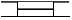
- 오르내리창
- 붙박이문
- 붙박이창
- 격자문
(정답률: 74%)
46. 건축물의 묘사에 있어서 묘사 도구로 사용하는 연필에 대한 설명 중 틀린 것은?
- 폭이 넓은 명암을 나타낸다.
- 다양한 질감 표현이 가능하다.
- 지울 수 있으나 번지거나 더러워질 수 있다.
- 일반적으로 H의 수가 많을수록 무르다.
(정답률: 79%)
47. 공사 예산서 작성시 불필요한 것은?
- 공사에 소요되는 재료명
- 재료의 수량
- 각종 단가
- 구조 계산서
(정답률: 67%)
48. 투시도법의 시점에서 화면에 수직하게 통하는 투사선의 명칭으로 옳은 것은?
- 소점
- 시선축
- 시점
- 수직선
(정답률: 40%)
49. CAD 사용의 효과와 가장 거리가 먼 것은?
- 설계의 생산성 향상
- 도면 작성시간의 증가
- 설계 오류의 감소
- 설계변경에 따른 수정 작업의 용이
(정답률: 84%)
50. 다음 중 지붕 경사의 표시로 가장 알맞은 것은?
- 4/10
- 4/100
- 4/50
- 2/100
(정답률: 72%)
51. 화면에 직접 접촉하여 명령어 선택이나 좌표 입력이 가능한 CAD 시스템의 입력 장치는?
- 마우스
- 태블릿
- 라이트 펜
- 조이스틱
(정답률: 33%)
52. 배경표현법의 주의 사항 중 틀린 것은?
- 표현에서는 크기와 무게, 그리고 배치는 도면 전체의 구성요소가 고려되어야 한다.
- 건물 앞에 것은 사실적으로, 멀리 있는 것은 단순히 그린다.
- 공간과 구조, 그리고 그들의 관계를 표현하는 요소들에게 지장을 주어서는 안 된다.
- 건물의 용도와는 무관하게 가능한 한 세밀한 그림으로 표현한다.
(정답률: 84%)
53. 건축 도면에서 사람의 배경과 표현을 통해 알 수 있는 것과 가장 거리가 먼 것은?
- 스케일감
- 공간의 깊이
- 건물 공간의 관습적인 용도
- 건물의 배치
(정답률: 50%)
54. 단면도에 표시할 사항과 가장 거리가 먼 것은?
- 건축물의 높이. 층높이
- 처마높이. 창높이
- 난간높이, 배란다의 돌출정도
- 지붕의 물매. 창의 개폐법
(정답률: 60%)
55. 치수를 표기하는 요령으로 바르지 못한 것은?
- 치수는 특별히 명시하지 않는 한 마무리 치수로 표시한다.
- 협소한 간격이 연속될 때에는 인출선을 사용하여 치수를 쓴다.
- 치수 기입은 치수선에 평행하게 도면의 왼쪽에서 오른쪽으로, 아래에서 위로 읽을 수 있도록 기입한다.
- 치수 기입은 치수선을 중단하고 선의 중앙에 기입하는 것이 원칙이다.
(정답률: 71%)
56. 주택 도면을 제도하는데 있어서 유의해야 할 사항에 대한 설명으로서 부적당한 것은?
- 기초에 사용하는 재료를 알아야 한다.
- 기초의 깊이는 지질에 따라서만 결정하면 된다.
- 제도 순서와 도면 내용을 숙지해야 한다.
- 기초의 구조와 크기 등을 이해해야 한다.
(정답률: 79%)
57. CAD시스템을 통하여 생산성을 높일 수 있는 분야를 가장 바르게 묶은 것은?
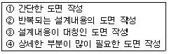
- ① ② ③ ④
- ① ② ③
- ② ③ ④
- ① ② ④
(정답률: 40%)
58. 다음 중 CAD로 작성한 도면의 출력장치로 가장 알맞은 것은?
- 플로터
- 스캐너
- 마우스
- 태블릿
(정답률: 67%)
59. 시공후 보의 단부에 균열이 생겼다. 설계상의 결함으로 가장 적당한 것은?
- 주근의 부족
- 늑근의 부족
- 대근의 부족
- 나선철근의 부족
(정답률: 60%)
60. 강재 표시중 2L-125 × 125 × 6에서 6이 나타내는 뜻은?
- 수량
- 길이
- 높이
- 두께
(정답률: 59%)